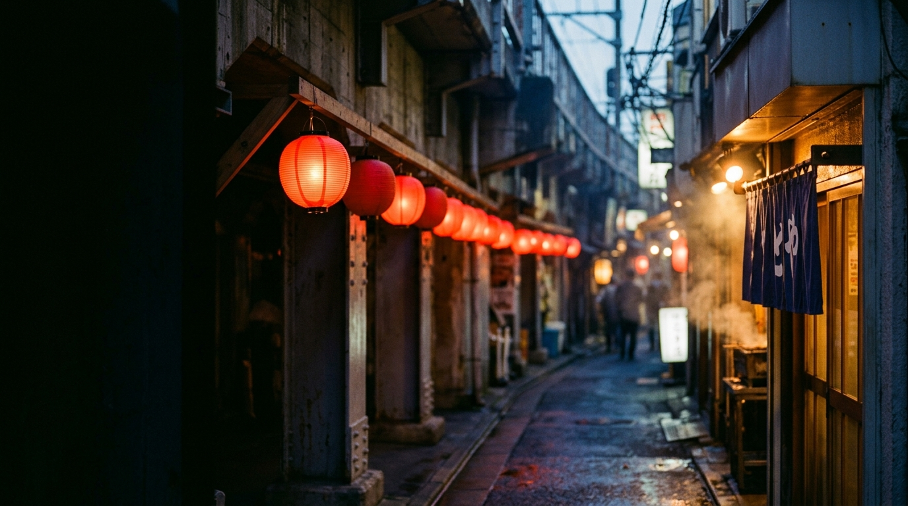
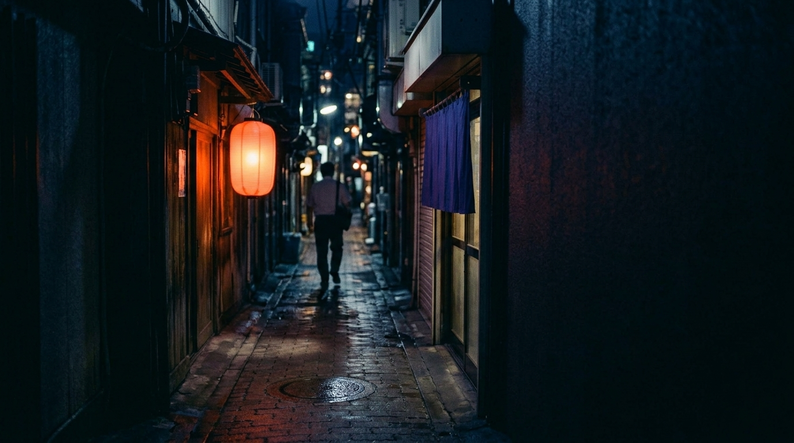

西荻窪 線路沿い ／ 十席の酒場
ただいま、の灯り。
炉ばた 小灯KOTOMOSHI
17:30のれんを上げる
17時半、
灯をいれる。
電車が通るたび、
窓が少しだけ鳴る。
線路沿いの、十席の店です。
19:30乾杯
一杯目は、
何も考えない。
- 生ビール650
- 緑茶ハイ450
- ハイボール520
21:00焼き場
焼き場に、
火が入る。
炭火で、一本ずつ。
たれか塩かは、串ごとに決めてあります。
つくね240
ねぎま220
ささみ200
手羽先260
せせり220
しいたけ180
22:15二合目
二合目からは、
猪口で。
日本酒は、その日に開けた四本だけ。
一合、七百五十円から。
品書き
- きんぴら三八〇
- 厚揚げ四二〇
- 焼きなす四五〇
- 枝豆三五〇
- あじフライ六八〇
- ぬか漬け三二〇
23:30〆
〆は、
土鍋で炊く。
注文から三十分。
待つ時間も、肴のうち。
土鍋ごはん950
